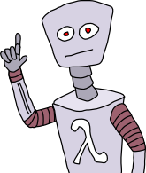

Observability
for Node.js & Realtime Software

@dshaw
- #bigdata
- #chinamarket
- #smallmodules

@enterprisestack
AKA: Understanding WTF is going on with your Node app at runtime.
dshaw
Voxer
The Node Firm
NodeUp
Define: Observability
Observability is a measure for how well internal states of a system can be inferred by knowledge of its external outputs.
Source: Wikipedia
Caveat Emptor
I'm going to abuse the term a bit.
Realtime App Priorities
- Scalability
- Observability
Scale is why we build realtime apps. Observability is how we keep things sane at scale.
Observability: Why?
Sometimes things get out of control.

You'll want to know what's going on.
Thank you!
@dshaw
More at: github.com/dshaw